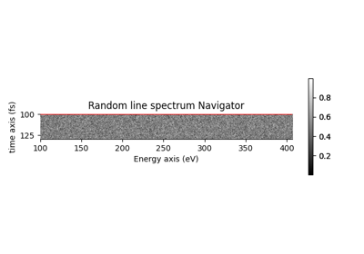
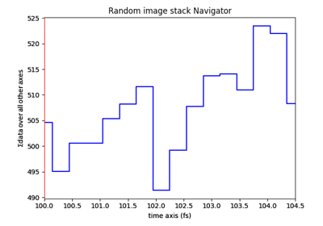
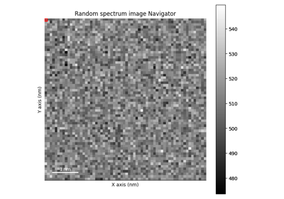
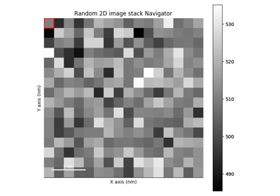
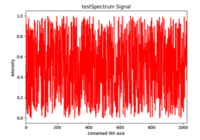
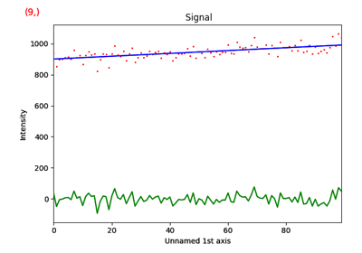
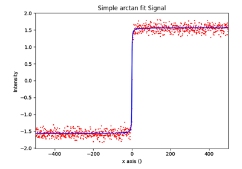
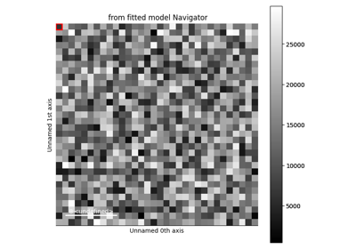

Gallery of Examples#
Below is a gallery of examples.
Signal Creation and plotting#
Below is a gallery of examples on creating a signal and plotting.

Creates a line spectrum

Creates a 3D image and plots it
Creates a 3D image and plots it

Creates a spectrum image and plots it
Creates a spectrum image and plots it

Creates a 4D image and plots it
Creates a 4D image and plots it
Loading, saving and exporting#
Below is a gallery of examples on loading, saving and exporting data.

Export single spectrum
Model fitting#
Below is a gallery of examples on model fitting.

Plot Residual


Simple arctan fit
Region of Interest#
Below is a gallery of examples on using regions of interest with HyperSpy signals.
SpanROI on signal axis

Simple simulations#
Below is a gallery of examples on simulating signals which can be used to test HyperSpy functionalities

Simple simulation (2 Gaussians)
Simple simulation (2 Gaussians)